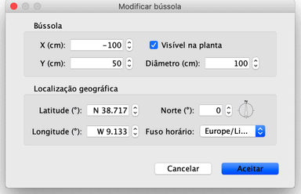

| Editar a bússola e a localização geográfica | |||
Todas as novas casas mostram uma bússola no canto superior esquerdo da planta. Como todos os objectos na planta, pode ser arrastada e largada ou movida com as setas do teclado depois de seleccionada. Quando a bússola é o único objecto seleccionado na planta, pode redimensioná-la ou alterar a direcção do Norte com os seus indicadores.
|

|
Quando coloca o ponteiro do rato está sobre um desses indicadores, o ponteiro altera-se para indicar que pode arrastar esse indicador. A bússola e a localização geográfica da sua casa também podem ser editadas numa janela própria, que surge com um duplo clique na bússola mostrada na planta, ou escolhendo Planta > Modificar bússola....  Na janela da bússola, pode alterar a localização, o diâmetro, a direcção do Norte e definir se deve ser mostrada na planta ou não. Pode também definir a Latitude e Longitude da localização geográfica da sua casa e o fuso horário da sua região. |
|